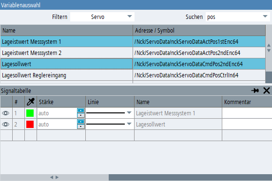

Die Variablen können Sie aus dem Variablenauswahlfenster zur Trace-Konfiguration hinzufügen.
Vorgehensweise
Wenn die Signaltabelle nicht sichtbar ist, öffnen Sie sie über den Softkey "Signaltabelle" oder indem Sie in der Symbolleiste auf das Symbol "Signaltabelle" klicken.
Der Softkey "Variable einfügen" ist jetzt aktiv.
Klicken Sie den Softkey "Variable einfügen".
Das Fenster "Variablenauswahl" wird geöffnet.
Wählen Sie die gewünschte Variable aus der Liste aus.
Um mehrere Variablen auszuwählen, verwenden Sie die <STRG>- oder <SHIFT>-Taste und wählen die Variablen in der Liste aus.
Um die ausgewählten Variablen in die Konfiguration einzufügen, klicken Sie den Softkey "Hinzufügen".
Sie können Variablen auch hinzufügen, indem Sie sie mit Drag-and-Drop aus der Auswahlliste in die Signaltabelle ziehen.
Sie können eine ausgewählte Variable auch mehrfach hinzufügen, wenn Sie dieselbe Variable in Bezug auf mehrere Achsen aufzeichnen möchten.
Klicken Sie auf den Softkey "<< Zurück", um das Variablenauswahlfenster zu schließen.
Wählen Sie in der Signaltabelle für jede Variable die Parameter aus.
| | Weitere Informationen, für eine aktuell ausgewählte NC-Variable im Variablenauswahlfenster, finden Sie in der Online-Hilfe (gilt nicht für PLC- oder GUD-Variablen). |
| Hinweis |
PLC1500-Symbolvariablen, OEM-PLC-Variablen und GUD-Variablen werden beim ersten Öffnen der Trace-Anwendung importiert. Die Liste dieser Variablen steht erst nach Abschluss des Imports im Auswahldialog, und in der Autovervollständigungsliste der Signaltabelle, zur Verfügung. Während des Imports wird eine Meldung in der Statusleiste des Trace-Fensters angezeigt. |
In der Variablenauswahlliste suchen
Die Variablenliste enthält die Beschreibung der Variablen mit ihrer BTSS-Adresse (NC-Variablen) oder dem symbolischen Namen (PLC-Variablen). Bei PLC-Variablen für 840D/828D wird als Tool-Tipp im Feld "Adresse/Symbol" sowohl das Symbol als auch die entsprechende Speicheradresse angezeigt. Variablen für PLC1500 haben nur einen symbolischen Namen.
Das Auswahlfenster enthält eine Filter-Klappliste zum Auswählen der Variablenkategorien sowie ein Sucheingabefeld. Der in das Suchfeld eingegebene Text wird im Beschreibungstext und unter den Adressen und Symbolen derjenigen Variablen gesucht, die aufgrund der gewählten Filterkategorie sichtbar sind. Bei der Suche wird die Groß- und Kleinschreibung nicht beachtet.
Bei PLC-Variablen für 840D/828D wird der Suchausdruck auch unter den Speicheradressen gesucht (obwohl die Adresse nur im Tooltip sichtbar ist). Deshalb können diese Variablen entweder durch Eingeben eines Teils des Symbols oder eines Teils der Datenbankadresse gesucht werden.
Antriebstrace-Variablen einfügen
Das Variablenauswahlfenster für eine Antriebstrace-Konfiguration funktioniert ähnlich wie die NC-/PLC-Trace-Konfiguration, zeigt jedoch andere Daten an.
In der Filter-Klappliste werden die an der Maschine vorhandenen Antriebsobjekte angezeigt. Die Variablenliste enthält nur Parameter, die zu dem ausgewählten Antriebsobjekt gehören.
Durch Eingabe von Text in das Eingabefeld "Suchen" können Sie in der Variablenliste suchen. Nach den eingegebenen Zeichen wird sowohl in den Parameternummern als auch in den Parameternamen gesucht (dabei wird nicht auf Groß-/Kleinschreibung geachtet).
Über den Softkey "Hinzufügen" können Sie die ausgewählte Variable zur Trace-Konfiguration hinzufügen. Dadurch werden sowohl die Variable als auch das Antriebsobjekt in die Signaltabelle eingefügt.
Eine Variable kann der Signaltabelle auch durch Ziehen aus der Auswahlliste hinzugefügt werden (keine Mehrfachauswahl zulässig).
Beim Hinzufügen eines Antriebsobjekts, das zu einer anderen Control Unit als die anderen Antriebsobjekte in der Konfiguration gehört, werden die vorher ausgewählten Antriebsobjekte ungültig. Vor der Ausführung dieses Vorgangs wird eine Bestätigungsmeldung angezeigt.